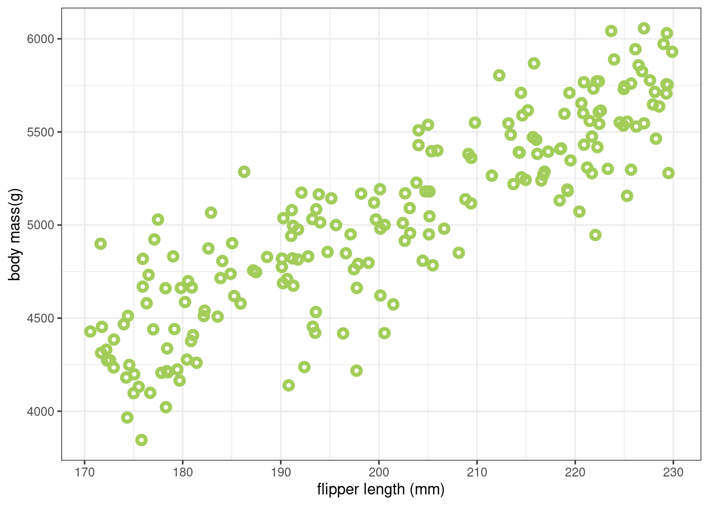

ggplot(penguins, aes(x=flipper_length_mm, y=body_mass_g)) +
geom_point(shape=21, colour="darkolivegreen3", stroke=2) +
xlab("flipper length (mm)") + ylab("body mass(g)") +
theme_bw()Linear Regression
In this chapter, we will consider the relationship between size and weight, for penguins in the palmerpenguins dataset. There are other variables in the dataset that could have an association with penguin weight, but we will be focusing on the association with a measure of penguin size. We will try to describe this relationship using linear regression in R.
The Scientific Question
We can see a relationship between size and weight for penguins in the palmerpenguins dataset by plotting their body mass (in g) against flipper length (in mm). Here, we are using flipper length as a representative measure for overall penguin size.
We can see from Figure 1 that there does appear to be, overall, a linear relationship between weight and flipper size.
The Scientific Model
We can propose a scientific model for this association as in Equation 1, where \(F\) represents flipper size, as a representative measure of overall penguin size, and \(W\) represents the weight of a penguin. Our argument for this kind of causal relationship might run as follows:
Penguins with big flippers tend to be large and, because they also tend to have more penguin in them, they will necessarily weigh more.
\[ F \rightarrow W \tag{1}\]
Note
We don’t have the arrow pointing the other way, as it doesn’t seem as reasonable to argue that increasing the weight of a penguin necessarily increases that penguin’s flipper length.
Warning
Our scientific model considers the directionality of influence: it is a causal model. But linear regression will only tell us about the association between the variables. We must use this causal model to interpret the result.
We can formally say that penguin weight is some function of flipper size, and represent that with Equation 2:
\[ W = f(F) \tag{2}\]
Incorporating real world variation
Looking at Figure 1 we can see that the relationship between penguin body mass and flipper size isn’t exactly a straight line. This reflects real-world variation in the dataset that is the result of other influences.
Note
We don’t know, or even need to know, what those influences are - though candidate might include
- measurement error
- the influence of recent fish catch successes on a penguin’s stomach contents
- the day on which the penguin was measured
- penguin sex
- the condition/illness of the penguin
or any of several other factors.
These other influences can be treated as unobserved influences, which we represent as a single causal influence on \(W\) in Equation 3 by the \(\enclose{circle}{U}\) symbol (the circle means that the variable is unobserved, or unmeasured).
\[ F \rightarrow W \leftarrow \enclose{circle}{U} \tag{3}\]
So we now say that penguin weight is some function of flipper size and the unobserved variable \(U\), and represent that with Equation 4:
\[ W = f(F,U) \tag{4}\]
The Statistical Model
We have a scientific model of how we believe the system relating flipper size to penguin weight works. But we must now construct a statistical model which will allow us to define and estimate the associations between measured variables.
Simulating the system
Warning
There are many good reasons why we would want to simulate our system before analysing the data. In this case, with such a simple association, it might seem like overkill: there’s an “obvious” linear relationship, so let’s go straight to a linear fit. But here we want to focus on the process as much as anything else, so we will work through each step as though we were dealing with a much more complex model.
In many systems the underlying complexity can build up quite rapidly, and it may not be so obvious that our model (e.g. as defined in Equation 3 and Equation 4) captures its behaviour. Following this process will protect against some of the negative effects of that.
Simulating the system as we understand it, where we are in control of the parameters, allows us to gauge the effectiveness of our approach, and the precision and accuracy of our fit when estimating the effect of, say, flipper size on penguin weight.
Important
A big advantage of simulating the system is that it can give us confidence, and avoid giving us false confidence.
If we can’t recover the actual values in our simulated system - using our data analysis approach - then we shouldn’t have much confidence that it will do a better job on the real data. But if we can reliably recover those values from the simulated system, then so long as our model is a good representation of the real world we might draw some confidence from this.
We’re going to turn Equation 3 into a mathematical equation that has parameters we can estimate, so that we can try to determine the association between flipper size and weight. We represent the result in Equation 5.
\[ W = \beta F + U \tag{5}\]
This equation says that the weight of a penguin \(W\) can be expressed as some proportion (\(\beta\)) of its flipper size \(F\), plus some unobserved value \(U\) representing variational noise in the data.
Tip
Our ultimate goal is to estimate \(\beta\), the association between flipper size \(F\) and weight \(W\).
Note
You will have noticed that, although we measure \(W\) and \(F\) directly, we have not measured \(U\) and, indeed, we cannot measure \(U\). The value of \(U\) changes from individual to individual, and we must make assumptions about it, in order to include it in our simulation.
We assume that the value of \(U\) for an individual is drawn from a distribution of possible values. Here we’re going to assume that this is:
- a Normal (Gaussian) distribution
- which has mean of zero (0)
- a standard deviation of some size yet to be determined
This represents random “noise” in the data that is centred around zero.
We can write our simulation in R. Here, sim_weight() is a function we can call to generate simulated weight data. We need to pass it three arguments:
F: a vector of flipper sizesbeta: the parameter in Equation 5 determining the relationship between flipper size and penguin weightsd: the standard deviation of the Gaussian distribution representing \(U\)
sim_weight <- function(F, beta, sd) {
U <- rnorm(length(F), 0, sd)
W <- beta * F + U
return(W)
}To use sim_weight() we need to give it a vector of flipper size values. We’ll generate these uniformly-distributed values in the range we saw in Figure 1, using R’s runif() function, and plot the result below.
Note
At this point, we do not know the real values of beta/\(\beta\) or sd. We’re just going to use some values that seem reasonable
F <- runif(200, min=170, max=230)
W <- sim_weight(F, beta=25, sd=250)
data <- data.frame(body_mass_g=W, flipper_length_mm=F)
ggplot(data, aes(x=flipper_length_mm, y=body_mass_g)) +
geom_point(shape=21, colour="darkolivegreen3", stroke=2) +
xlab("flipper length (mm)") + ylab("body mass(g)") +
theme_bw()
Tip
The first thing we want to do is check that the values are in the kind of range we expect, that they are realistic. Here that means we want to confirm that no individuals in the simulations are incredibly light or heavy, or have extremely long or short flipper lengths.
If we do notice major differences between our model and the data, then we can adjust our model, or our parameter choices accordingly.
Describing the model
We need to describe our simulation model in terms of conventional statistical notation. We list our variables, defining each variable as a deterministic or distributional function of the other variables.
\[ \begin{eqnarray} &W_i = \beta F_i + U_i \\ &U_i \sim \textrm{Normal}(0, \sigma) \\ &F_i \sim \textrm{Uniform}(170, 230) \end{eqnarray} \tag{6}\]
In Equation 6, we use the subscript term \(_i\) to indicate the value for an individual observation with index \(i\). The first penguin has index 1, the second has index 2, and so on. Each individual penguin has its own measurement of weight \(W_i\) and flipper size \(F_i\), and is subject to an individual influence from unobserved causes \(U_i\).
The first line of the definition \(W_i = \beta F_i + U_i\) is a restatement of Equation 5, the equation for expected weight (given flipper size), being specific about it applying to an individual penguin. The Gaussian noise \(U_i\) is sampled from a Gaussian (Normal) distribution centred on zero, with some (as yet unknown) variance, and where the penguin’s flipper size is drawn from a uniform distribution of lengths between 170 and 230 mm.
Constructing the Estimator
We want to estimate how the average weight of a penguin changes with the length of the penguin’s flipper. This is represented in Equation 7
\[ \textrm{E}(W_i|F_i) = \alpha + \beta F_i \tag{7}\]
Here, \(\textrm{E}(W_i|F_i)\) represents the expected (or average) weight of a penguin (\(W_i\)), conditional on its flipper size (\(F_i\)). The relationship between the two is described as the expression \(\alpha + \beta F_i\) - describing a linear relationship where \(\alpha\) is the intercept and \(\beta\) is the slope of the line.
Tip
The model in Equation 7 describes a relationship where an individual with a flipper size of zero should also have a weight of zero, which seems intiutively reasonable.
We can use the relationships and implications defined in these models to look at violations of the model, which may be opportunities for improving the model and our understanding of the system.
We’re going to use a Bayesian approach to estimate values for \(\alpha\), \(\beta\), and \(\sigma\) as described in the equation for the posterior distribution, Equation 8.
\[ \textrm{Pr}(\alpha, \beta, \sigma|F_i,W_i) = \frac{\textrm{Pr}(W_i|F_i, \alpha, \beta, \sigma) \textrm{Pr}(\alpha, \beta, \sigma)}{Z} \tag{8}\]
Here, \(Z\) is a normalising constant that we’re not going to consider in detail.
The statistical model is then:
\[ \begin{eqnarray} W_i \sim \textrm{Normal}(\mu_i, \sigma) \mu_i = \alpha + \beta F_i \end{eqnarray} \tag{9}\]
which describes how \(W_i\) varies in relation to \(F_i\). Equation 9 describes how \(W_i\) is drawn from a Normal distribution with standard deviation \(\sigma\) and mean \(\mu_i\), where \(\mu_i\) is dependent on the value of \(F_i\) through the relationship \(\alpha + \beta F_i\).